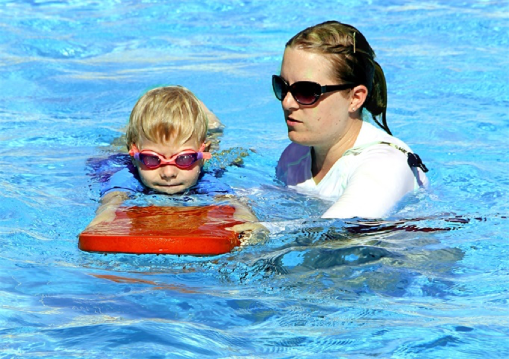
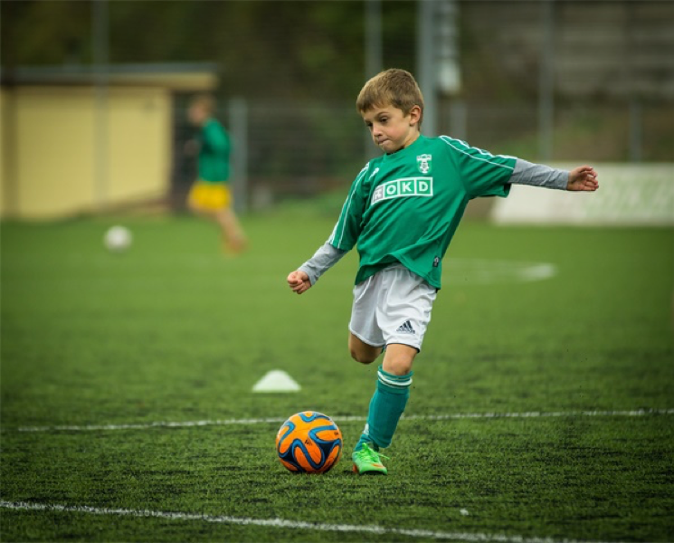
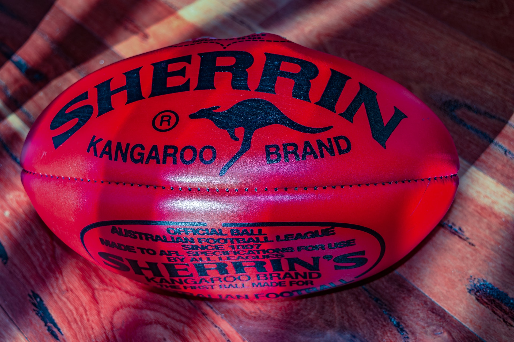
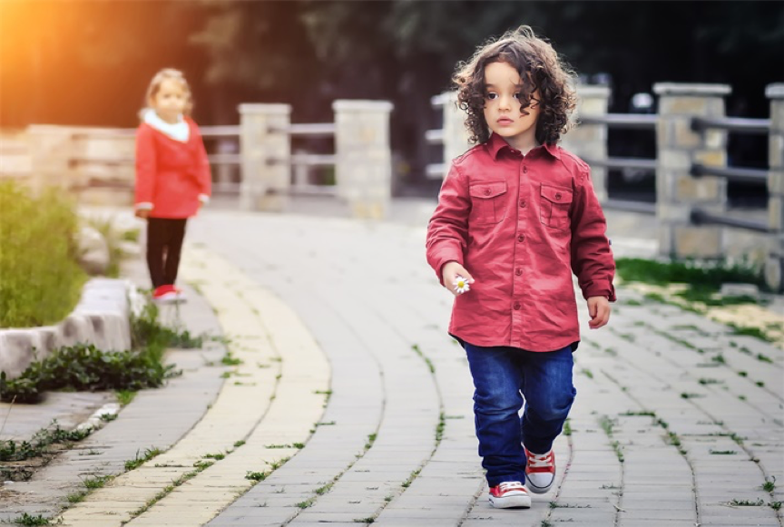
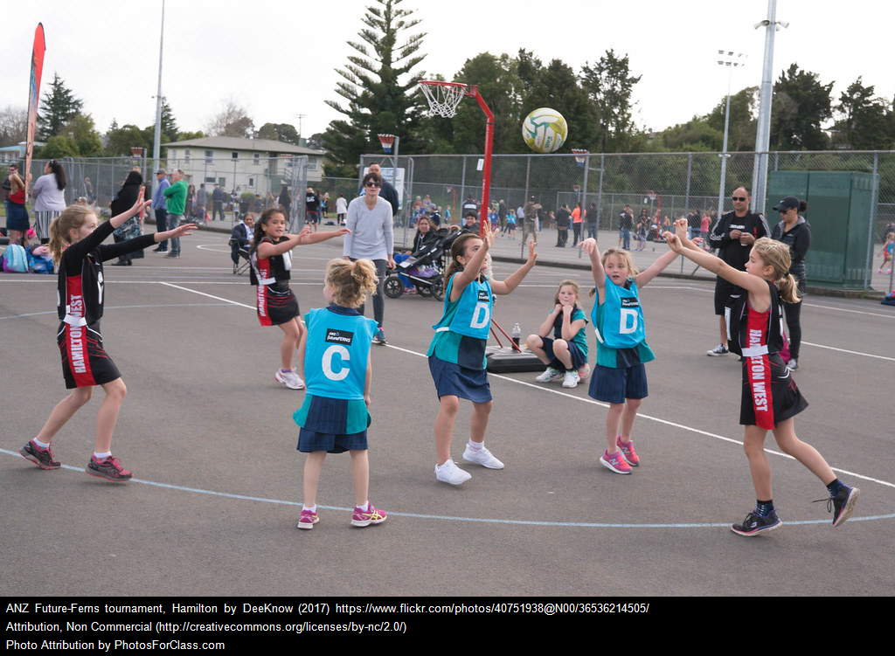
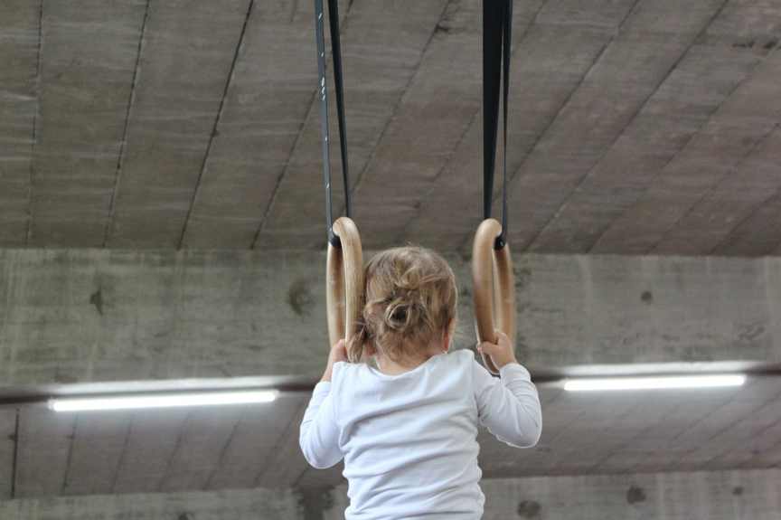
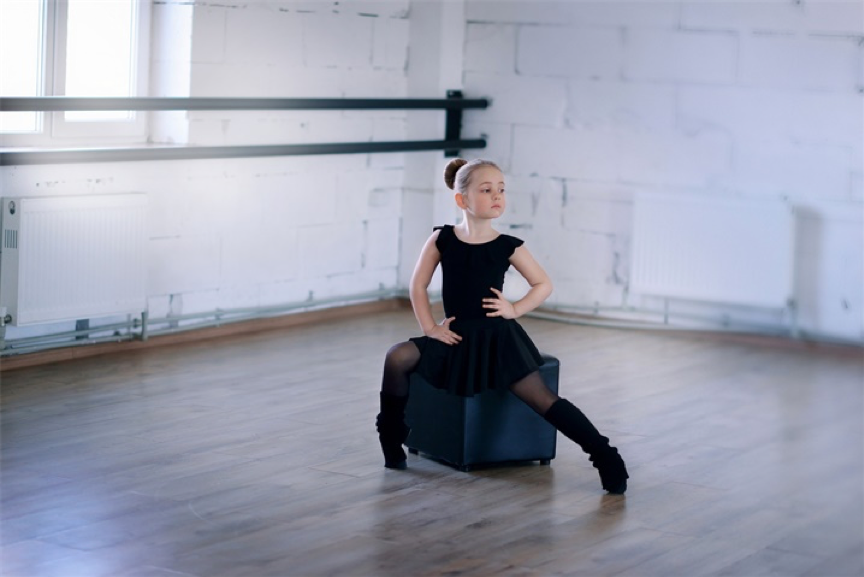
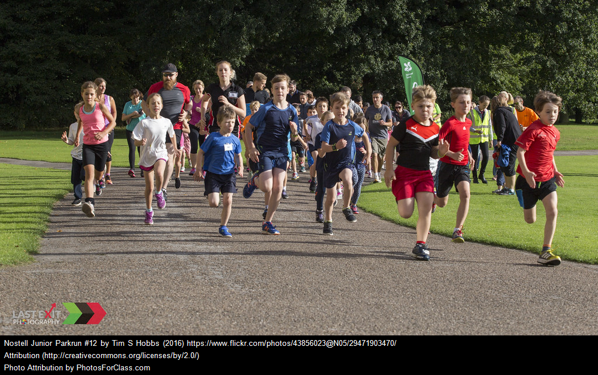
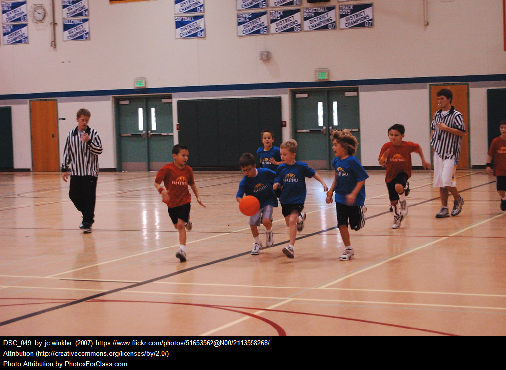
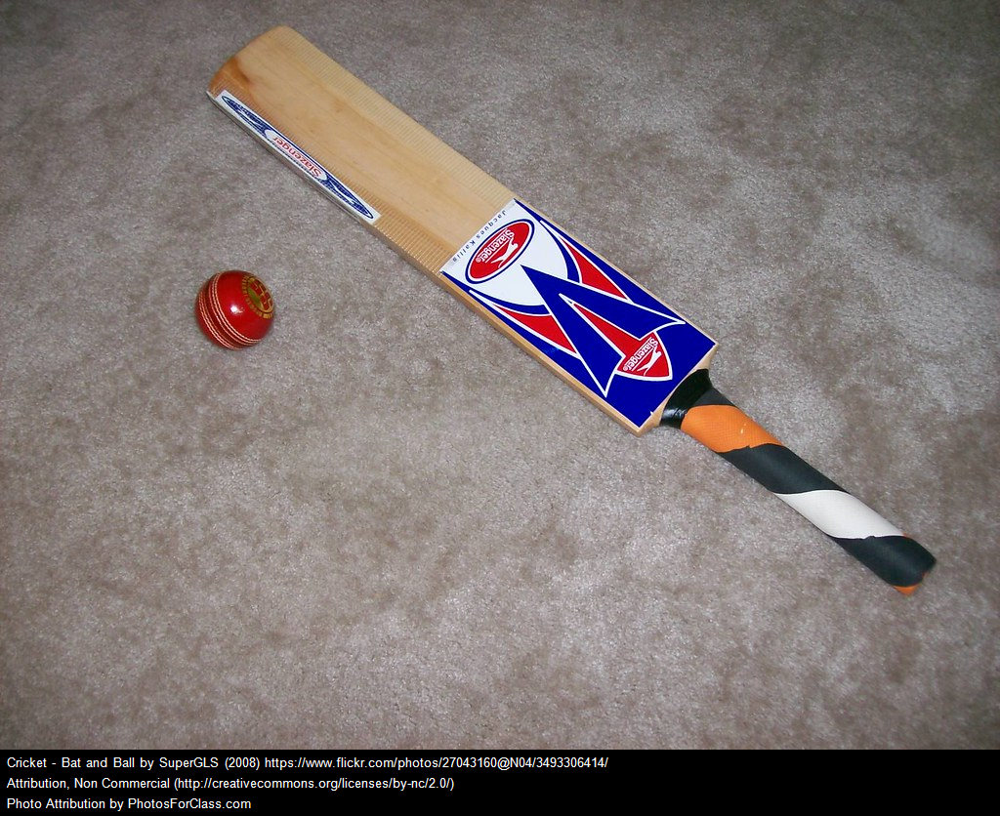

On this page, we offer many recommended activities for kids. Click the learn more button to see their benefits and safety tips. In the detail window that pops up, click the find activities button to view the activity in each suburb.

Swimming
Recommended age:
age 4 or above

Soccer
Recommended age:
age 5 or above

Football
Recommended age:
age 5 or above

Walking
Recommended age:
All age

Netball
Recommended age:
age 6 or above

Gymnastics
Recommended age:
age 6 or above
Martial Arts
Recommended age:
age 6 or above

Dancing
Recommended age:
age 3 or above

Little Athletics
Recommended age:
Age 5 to 15 years

Park run
Recommended age:
Age 4 and above

Basketball
Recommended age:
Age 5 and above

Cricket
Recommended age:
Age 5 and above